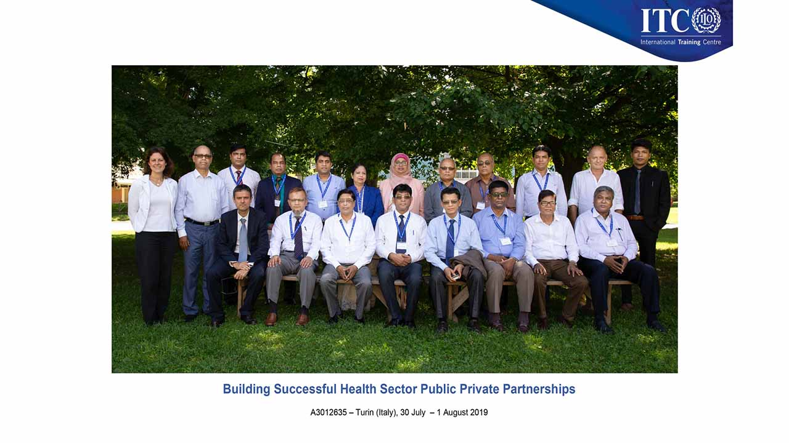

A Landmark Initiative to Improve Urban Healthcare
The "EU Support to Health and Nutrition to the Poor in Urban Bangladesh" was a significant, multi-year project funded by the European Union and implemented by the Local Government Division of Bangladesh. Its primary goal was to improve the health and nutrition status of the urban poor by strengthening health services through innovative models like Public-Private Partnerships (PPP) and Demand-Side Financing (DSF).
My company, Management and Training International Ltd. (MTI), was contracted by the project to implement several key capacity-building components. This involved organizing a series of high-stakes international and national events aimed at developing a strategic framework for PPP in the Bangladeshi health sector.
My Role: Program Coordinator
As the Program Coordinator on behalf of MTI Ltd., I was at the heart of the project's coordination and logistical operations. My role was to act as the primary liaison between the high-level Bangladeshi delegation—comprising senior officials from the Ministry of Health and Family Welfare (MoHFW) and the Ministry of Local Government, Rural Development and Cooperatives (MoLGRD&C)—and our international partners across Europe. This required meticulous planning and cross-cultural communication to ensure the project's objectives were met successfully.
Key Responsibilities and Activities Coordinated:
1. International Study Tour on Public-Private Partnerships (PPP)
A cornerstone of the project was a 12-day study tour to Europe for 15 senior government officials. I was responsible for coordinating this complex tour across Italy, France, and Germany. This included arranging high-level meetings and training sessions with key institutions such as:
- The Ministry of Health in Rome, Italy.
- The International Training Center (ITC) of the ILO in Turin, Italy.
- Workshops and lectures on health PPP models in Paris and Berlin.
My role involved managing the entire logistical chain, from travel and accommodation to ensuring seamless communication between the delegation and European experts.
The delegation during a training session at the ITC-ILO in Turin, which I helped coordinate.
2. National and Regional Workshops
The knowledge gained from the European tour was disseminated through a series of workshops across Bangladesh. I coordinated four regional and one national workshop in locations including Cumilla, Rajshahi, Jashore, and Dhaka. These events brought together over 220 stakeholders to discuss and formulate a strategic framework for implementing PPPs in the health sector. The final "National Consultation Workshop" held at CIRDAP in Dhaka was a capstone event, summarizing the project's findings and setting a path forward.
3. Project Closure and Reporting
Finally, I was involved in coordinating the official Project Closure Workshop in September 2021. This event was attended by Honourable Ministers, Senior Secretaries, and the EU Head of Cooperation, where the project's successes and achievements were presented. MTI received special thanks for its "nice organization and arrangement for the event," a testament to our team's dedicated coordination efforts.
Impact and Personal Contribution
This project was instrumental in establishing a foundational framework for Public-Private Partnerships in Bangladesh's urban health sector. My direct involvement in coordinating between diverse, high-level teams from Bangladesh, Italy, France, Germany, and Switzerland was a challenging yet incredibly rewarding experience. It allowed me to leverage my skills in project management, international liaison, and logistical planning to contribute to a project of national importance with significant international backing.
Need Coordination for an International Project?
My experience managing multi-country delegations and coordinating complex events for government and international bodies can bring significant value to your initiatives. Let's connect.
Contact Me